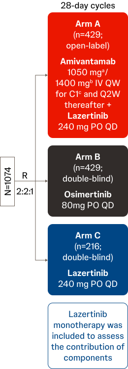
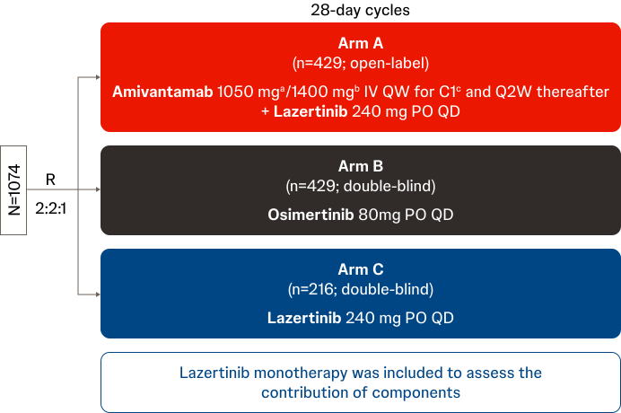
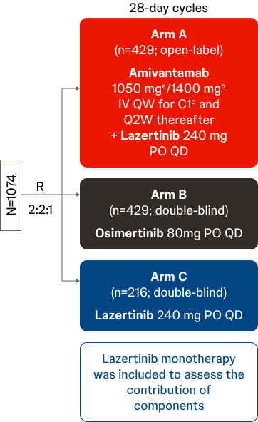
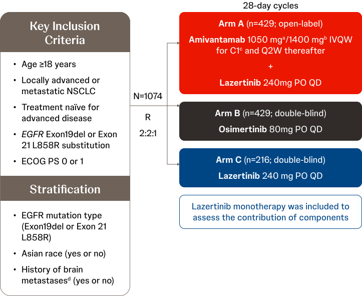
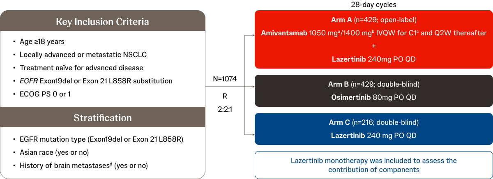

- Efficacy was evaluated at a median follow-up of 22 months (data cutoff: August 11, 2023).5
-
Median PFS by BICR was 23.7 months (95% CI, 19.1-27.7) for RYBREVANT plus lazertinib and
16.6 months (95% CI, 14.8-18.5) for osimertinib (HR, 0.70 [95% CI, 0.58-0.85];
P<0.001).5
- The 12-month PFS for RYBREVANT plus lazertinib vs osimertinib was 73% (95% CI, 69-77) vs 65% (95% CI, 60-69).
- The 18-month PFS for RYBREVANT plus lazertinib vs osimertinib was 60% (95% CI, 55-64) vs 48% (95% CI, 43-53).
- The 24-month PFS for RYBREVANT plus lazertinib vs osimertinib was 48% (95% CI, 42-54) vs 34% (95% CI, 28-39).
- Median PFS was 18.5 months (95% CI, 14.8-20.1) for lazertinib monotherapy.5
- Median extracranial PFS (defined as time from randomization to disease progression as detected by extracranial scans or death) by BICR was 27.5 months (95% CI, 22.1-NE) for RYBREVANT plus lazertinib and 18.4 months (95% CI, 16.5-20.2) for osimertinib (HR, 0.68 [95% CI, 0.55-0.83].5
- For patients with a history of brain metastases, median PFS by BICR was 18.3 months (95% CI, 16.6-23.7) for RYBREVANT plus lazertinib and 13 months (95% CI, 12.2-16.4) for osimertinib (HR, 0.69 [95% CI, 0.53-0.92]). For patients without a history of brain metastases, median PFS by BICR was 27.5 months (95% CI, 22.1-NE) for RYBREVANT plus lazertinib and 19.9 months (95% CI, 16.6-22.9) for osimertinib (HR, 0.69 [95% CI, 0.53-0.89]).5
- RYBREVANT (amivantamab-vmjw) is a low fucose, fully human IgG1-based bispecific antibody with immune cell-directing activity that targets EGFR mutations and MET mutations and amplifications in NSCLC.1
- LAZCLUZE (lazertinib) is a third-generation EGFR TKI.2
Guidelines
-
NCCN Clinical Practice Guidelines in Oncology (NCCN Guidelines®) for NSCLC recommends
amivantamab-vmjw (RYBREVANT) as a first-line therapy option in combination with lazertinib for EGFR
Exon 19 deletion or Exon 21 L858R mutation discovered prior to first-line systemic therapy (NCCN Category 1, other recommended). If EGFR mutation is discovered during first-line systemic therapy,
amivantamab-vmjw is recommended in combination with lazertinib (NCCN Category 2A).3
- Prophylactic anticoagulation is recommended for amivantamab-vmjw + lazertinib at the time of initiation to prevent venous thromboembolic events.
-
National Comprehensive Cancer Network® (NCCN®) Categories of Evidence are defined as3:
- Category 1 is based upon high-level evidence, and there is uniform NCCN consensus (≥85% support of the Panel) that the intervention is appropriate.
- Category 2A is based upon lower-level evidence, and there is uniform NCCN consensus (≥85% support of the Panel) that the intervention is appropriate.
- NCCN Category of Preference of other recommended intervention is defined as other interventions that may be somewhat less efficacious, more toxic, or based on less mature data; or significantly less affordable for similar outcomes.3
- Please refer to the NCCN Guidelines® for NSCLC at www.nccn.org for current and complete recommendations for the use of amivantamab-vmjw in NSCLC.3
MARIPOSA Study
-
MARIPOSA (NCT04487080) is an ongoing, phase 3, randomized, international study
evaluating
the efficacy and safety of RYBREVANT and lazertinib combination therapy (open-label,
n=429)
vs osimertinib (double-blind, n=429) vs lazertinib (double-blind, n=216) as
first-line treatment
in patients with EGFR-mutated (Exon19del or Exon 21 L858R substitution)
locally advanced or
metastatic NSCLC. The primary endpoint is PFS, based on BICR.2,4,5
- At a median follow-up of 22 months, median PFS by BICR for RYBREVANT plus
lazertinib
vs osimertinib was 23.7 months (95% CI, 19.1-27.7) vs 16.6 months (95% CI, 14.8-18.5;
HR, 0.70 [95% CI, 0.58-0.85]; P<0.001).5
- For patients with a history of brain metastases, median PFS by BICR for RYBREVANT plus lazertinib vs osimertinib was 18.3 months (95% CI, 16.6-23.7) vs 13 months (95% CI, 12.2-16.4; HR, 0.69 [95% CI, 0.53-0.92]).5,6
- Grade ≥3 AEs occurred in 75% of patients treated with RYBREVANT plus lazertinib and 43% of patients treated with osimertinib. VTE rates were increased with RYBREVANT plus lazertinib vs osimertinib. TRAEs leading to discontinuation of all agents occurred in 10% of patients treated with RYBREVANT plus lazertinib and in 3% of patients treated with osimertinib.5
- At a median long-term follow-up of 31.1 months, median OS for RYBREVANT plus
lazertinib
vs osimertinib was NE vs 37.3 months (95% CI, 32.5-NE; HR, 0.77 [95% CI,
0.61-0.96];
P=0.019a).7
- For patients with a history of brain metastases, median icPFS for RYBREVANT plus lazertinib vs osimertinib was 24.9 months (95% CI, 20.1-34.7) vs 22.2 months (95% CI, 18.4-26.1; HR, 0.82 [95% CI, 0.62-1.09];P=0.165a).
- At a median follow-up of 22 months, median PFS by BICR for RYBREVANT plus
lazertinib
vs osimertinib was 23.7 months (95% CI, 19.1-27.7) vs 16.6 months (95% CI, 14.8-18.5;
HR, 0.70 [95% CI, 0.58-0.85]; P<0.001).5
Note: AE, adverse event; BICR, blinded independent central review; CI,
confidence interval;
EGFR, epidermal growth factor receptor; Exon19del,
Exon 19 deletion; HR, hazard
ratio; icPFS, intracranial PFS; IgG1, immunoglobulin G1; MET,
mesenchymal-epithelial transition; NCCN, National Comprehensive Cancer Network; NE, not estimable;
NSCLC, non-small cell lung cancer; OS, overall survival; PFS, progression-free survival;
TKI, tyrosine kinase inhibitor;
TRAE, treatment-related AE; VTE, venous thromboembolism.
aThe endpoint was not part of formal statistical testing; the P-value
displayed is nominal.
MARIPOSA Study
-
A secondary analysis in high-risk patients reported6,8:
- For patients with high-risk disease (≥1 high-risk feature at baseline), median
PFS by BICR for
RYBREVANT plus lazertinib (n=280) vs osimertinib (n=288) was 20.3 months (95%
CI, 18.2-24.0) vs 15 months (95% CI, 13.0-16.8; HR, 0.72 [95% CI, 0.58-0.90];
P=0.004;
P-values in these secondary analyses are nominal).
- Baseline liver metastases: HR, 0.58 (95% CI, 0.37-0.91); P=0.017; TP53 co-mutations: HR, 0.65 (95% CI, 0.48-0.87); P=0.003; detectable baseline EGFR-mutated ctDNA: HR, 0.68 (95% CI, 0.53-0.86); P=0.002; without EGFR-mutated ctDNA clearance at C3D1: HR, 0.49 (95% CI, 0.27-0.87); P=0.015.
- For patients with high-risk disease (≥1 high-risk feature at baseline), median
PFS by BICR for
RYBREVANT plus lazertinib (n=280) vs osimertinib (n=288) was 20.3 months (95%
CI, 18.2-24.0) vs 15 months (95% CI, 13.0-16.8; HR, 0.72 [95% CI, 0.58-0.90];
P=0.004;
P-values in these secondary analyses are nominal).
-
An Asian subgroup analysis reported9:
- At a median follow-up of 22.5 months, median PFS by BICR for RYBREVANT plus lazertinib vs osimertinib was 27.5 months (95% CI, 20.3-NE) vs 18.3 months (95% CI, 15.8-20.2; HR, 0.65 [95% CI, 0.50-0.83]; P<0.001a).
- EGFR- and MET-related AEs were increased with RYBREVANT plus lazertinib vs osimertinib and were mostly grade 1-2. VTE rates were also increased with RYBREVANT plus lazertinib vs osimertinib and were mostly grade 1-2. There were no grade 4-5 VTEs.
-
A post-progression and safety analysis reported10:
- At a median follow-up of 22 months, in the RYBREVANT plus lazertinib vs osimertinib arm, 35% (147/421) vs 47% (203/428) of patients had PD, median TTD was 26.2 (95% CI, 22.1-NE) vs 23 months (95% CI, 20.3-25.3; HR, 0.88; 95% CI, 0.73-1.07; P=0.21a), and median TTST was NE (95% CI, 26.8-NE) vs 24.1 months (95% CI, 22-29; HR, 0.82; 95% CI, 0.66-1; P=0.05a).
- Key AEs occurred within the first 4 months of treatment. Late onset AEs were uncommon.
-
An exploratory analysis for RYBREVANT dose interruptions in the first 4 months of
RYBREVANT exposure reported11:
- At a median follow-up of 22 months, median PFS in patients with (n=188) vs without (n=190) RYBREVANT dose interruptions after the first 4 months of RYBREVANT exposure was 27 months (95% CI, 20.3-NE) vs 25.7 months (95% CI, 22.2-NE). No significant association was found between dose interruptions and PFS after 4 months of RYBREVANT exposure (HR, 1.06; 95% CI, 0.73-1.44).
- Key AEs occurred most frequently during the first 4 months and declined over the next 4 months.
-
An exploratory analysis for lazertinib vs osimertinib reported12:
- At a median follow-up of 22 months, median PFS by BICR for lazertinib vs osimertinib was 18.5 months (95% CI, 14.8-20.1) vs 16.6 months (95% CI, 14.8-18.5; HR, 0.98 [95% CI, 0.79-1.22]).
- Most TEAEs were grade 1-2 in severity for lazertinib and osimertinib.
-
A ctDNA analysis for acquired resistance reported13:
- In the RYBREVANT plus lazertinib vs osimertinib arm, 4.4% vs 13.6% of patients had MET amplifications (P=0.017) and 0.9% vs 7.9% of patients had secondary EGFR resistance mutations (P=0.014).
-
A patient-relevant outcome analysis for TTSP and PROs reported14:
- At a median follow-up of 22 months, median TTSP for RYBREVANT plus lazertinib vs osimertinib was NE vs 29.3 months (95% CI, 25.3-NE; HR, 0.72 [95% CI, 0.57-0.91]; P=0.005).
- In the RYBREVANT plus lazertinib vs osimertinib arm, no meaningful changes from baseline were observed in patient-reported functioning; patient-reported total symptom scores and individual lung cancer-associated symptom scores were comparable.
Note: AE, adverse event; BICR, blinded independent central review; C, cycle; CI, confidence
interval; ctDNA, circulating
tumor DNA; D, day; EGFR, epidermal growth factor receptor; Exon19del, Exon 19 deletion; HR, hazard
ratio; MET, mesenchymal-
epithelial transition; NE, not estimable; NSCLC, non-small cell lung cancer; PD,
progressive disease; PFS, progression-free
survival; PRO, patient-reported outcome; TEAE, treatment-emergent AE; TTD, time to
treatment discontinuation;
TTSP, time to subsequent progression; TTST, time to subsequent therapy; VTE, venous
thromboembolism.
aThe endpoint was exploratory and not part of hierarchical hypothesis testing.
This
endpoint was not adjusted for multiple comparisons. Therefore, the P-value
displayed is
nominal, and statistical significance has not been established.
MARIPOSA2,4,5
MARIPOSA (NCT04487080) is an
ongoing, phase 3, randomized study
designed to evaluate the efficacy
and safety of RYBREVANT and
lazertinib combination therapy (open-label, n=429) vs osimertinib (double-blind, n=429) vs lazertinib (double-
blind, n=216) as first-line treatment
in patients with EGFR-mutated (Exon19del or
Exon 21 L858R substitution) locally
advanced or metastatic NSCLC.
N=1074
Key Eligibility Criteria2,4,5
- Age ≥18 years
- Locally advanced or metastatic NSCLC
- Treatment naïve for advanced disease
- EGFR Exon19del or Exon 21 L858R substitution
- ECOG PS 0 or 1
Study Design2,4,5



Efficacy Results5,7
-
At a median follow-up of 22 months,
median PFS by BICR was
23.7 months (95% CI, 19.1-27.7)
for RYBREVANT plus lazertinib and
16.6 months (95% CI, 14.8-18.5)
for Osimertinib (HR, 0.70; 95% CI,
0.58-0.85; P<0.001).5
- The 18-month PFS for RYBREVANT plus lazertinib vs osimertinib was 60% (95% CI, 55-64) vs 48% (95% CI, 43-53).
- The 24-month PFS for RYBREVANT plus lazertinib vs osimertinib was 48% (95% CI, 42-54) vs 34% (95% CI, 28-39).
- Median PFS was 18.5 months (95% CI, 14.8-20.1) for Lazertinib monotherapy.5
- At a median long-term follow-up of 31.1 months, median OS was NE for RYBREVANT plus lazertinib and 37.3 months (95% CI, 32.5-NE) for osimertinib (HR, 0.77; 95% CI, 0.61-0.96; P=0.019d).7
Safety Results5
- TRAEs leading to discontinuation of all agents occurred in 10% of patients treated with RYBREVANT plus lazertinib and 3% with osimertinib.
- Grade ≥3 AEs were 75% vs 43% in the RYBREVANT plus lazertinib vs osimertinib arm.
- VTE rates were higher with RYBREVANT plus lazertinib vs osimertinib.
Additional Analyses6,8-14
- Secondary analysis of high-risk patients6,8: HR (95% CI) for median PFS: 0.72 (0.58-0.90; P=0.004) for RYBREVANT plus lazertinib vs osimertinib.
- Subgroup analysis in Asian patients9: HR (95% CI) for median PFS: 0.65 (0.50-0.83; P<0.001d) for RYBREVANT plus lazertinib vs osimertinib. Safety profile: comparable to the overall MARIPOSA study.
- Post-progression and safety analysis10: HR (95% CI) for median TTD and TTST: 0.88 (0.73-1.07; P=0.21d) and 0.82 (0.66-1; P=0.05d) for RYBREVANT plus lazertinib vs osimertinib. Key AEs occurred within the first 4 months; late onset AEs were uncommon.
-
Exploratory analyses11,12:
- Dose interruption: median PFS was 27.5 vs 25.7 months in patients with vs without RYBREVANT dose interruption after 4 months. The prevalence of key AEs was comparable in patients with and without RYBREVANT dose interruptions at all time points.11
- Lazertinib vs osimertinib: median PFS was 18.5 vs 16.6 months. Most TEAEs were grade 1-2 in severity.12
- ctDNA analysis for acquired resistance13: RYBREVANT plus lazertinib vs osimertinib: MET amplifications in 4.4% vs 13.6% (P=0.017); secondary EGFR resistance mutations in 0.9% vs 7.9% of patients (P=0.014), respectively.
- Patient-relevant outcome analysis14: RYBREVANT plus lazertinib vs osimertinib: HR (95% CI) for median TTSP of 0.72 (0.57-0.91; P=0.005); no meaningful changes from baseline in patient-reported functioning; and comparable patient-reported total symptom scores and individual lung cancer-associated symptom scores.
Note: AE, adverse event; BICR, blinded independent central review; C, cycle; CI,
confidence interval; D, day;
ECOG PS, Eastern Cooperative Oncology Group performance status; EGFR, epidermal growth factor
receptor;
Exon19del, Exon 19 deletion; HR, hazard ratio; IV, intravenous; NE, not estimable; NSCLC,
non-small cell lung cancer;
OS, overall survival; PFS, progression-free survival; PO, orally; QD, once daily; Q2W, every 2
weeks; QW, once weekly;
R, randomization; TEAE, treatment-emergent AE; TRAE, treatment-related AE; TTD, time to
treatment discontinuation;
TTSP, time to subsequent progression; TTST, time to subsequent therapy; VTE, venous
thromboembolism.
aIn patients <80 kg.
bIn patients ≥80 kg.
cThe first infusion was split over 2 days (350 mg on C1D1, and the remainder on
C1D2).
dThe endpoint was not part of formal statistical testing; the P-value
displayed is nominal.
- MARIPOSA (NCT04487080) is an ongoing, phase 3, randomized study designed to evaluate the efficacy and safety of RYBREVANT and lazertinib combination therapy (open-label, n=429) vs osimertinib (double-blind, n=429) vs lazertinib (double-blind, n=216) as first-line treatment in patients with EGFR-mutated (Exon19del or Exon 21 L858R substitution) locally advanced or metastatic NSCLC.2,4,5
MARIPOSA Study Design2,4,5,14


Primary Endpoint
- PFS by BICR per RECIST v1.1 in Arm A vs Arm B
Secondary Endpoints
Arm A vs Arm B- OSe
- Symptomatic PFSf
- PROh
- ORR
- icPFS
- DOR
- Safety
- PFS2
- TTSPg
MARIPOSA (ClinicalTrials.gov Identifier: NCT04487080) enrollment period: November 2020 to
May 2022; data cutoff: August 11, 2023.
aIn patients <80 kg.
bIn patients ≥80 kg.
cThe first infusion was split over 2 days (350 mg on C1D1, and the remainder
on C1D2).
dSerial brain MRIs were required for all patients. Baseline brain MRI was
required for all patients and performed ≤28 days
prior to randomization; patients who could not have MRIs were allowed to have CT scans.
Brain scan frequency was every
8 weeks for the first 30 months and then every 12 weeks thereafter for patients with a
history of brain metastasis and
every 24 weeks for patients with no history of brain metastasis. Extracranial tumor
assessments were conducted every 8
weeks for the first
30 months and then every 12 weeks until disease progression is confirmed by BICR.
eStatistical hypothesis testing included PFS and then OS.
fThis secondary endpoint will be presented at a future congress.
gAlso included death.
hAssessed using EORTC-QLQ-C30 (threshold of 10-point difference for a clinically
meaningful change) and NSCLC-SAQ.
- A total of 1074 patients were randomized to receive RYBREVANT plus lazertinib (n=429), osimertinib (n=429), or lazertinib (n=216).5
Demographics and Baseline Disease Characteristics5,15
| Characteristic |
RYBREVANT
+ Lazertinib (n=429) |
Osimertinib
(n=429) |
Lazertinib
(n=216) |
|---|---|---|---|
| Median age, years (range) | 64 (25-88) | 63 (28-88) | 63 (31-87) |
| Female, n (%) | 275 (64) | 251 (59) | 136 (63) |
| Race,a n (%) | |||
| Asian | 250 (58) | 251 (59) | 128 (59) |
| White | 164 (38) | 165 (38) | 79 (37) |
| American Indian or Alaska Native | 7 (2) | 7 (2) | - |
| Black or African American | 4 (1) | 3 (1) | - |
| Native Hawaiian or Pacific Islander | 1 (0.2) | 1 (0.2) | - |
| Multiple | 1 (0.2) | 1 (0.2) | |
| Unknown | 2 (0.5) | 1 (0.2) | - |
| ECOG PS 0, n (%) | 141 (33) | 149 (35) | 76 (35) |
| ECOG PS 1, n (%) | 288 (67) | 280 (65) | 140 (65) |
| History of smoking, n (%) | 130 (30) | 134 (31) | 73 (34) |
| History of brain metastases, n (%) | 178 (41) | 172 (40) | 86 (40) |
| EGFR mutation,b n (%) | |||
| Exon19del | 258 (60) | 257 (60) | 131 (61) |
| Exon 21 L858R | 172 (40) | 172 (40) | 85 (39) |
| Adenocarcinoma subtype, n (%) | 417 (97) | 415 (97) | 212 (98) |
|
aRace or ethnic group was reported by the patients. |
|||
- Median DOR by BICR among confirmed responders for RYBREVANT plus lazertinib vs osimertinib was 25.8 months (95% CI, 20.1-NE) vs 16.8 months (95% CI, 14.8-18.5).5
-
At a median follow-up of 22 months, median PFS2 estimates were not reliable (HR, 0.75
[95% CI,
0.58-0.98]; P=0.03).5,a
- In the RYBREVANT plus lazertinib arm, 98 patients started subsequent therapy, with 48 patients receiving EGFR TKI monotherapy and 32 patients receiving chemotherapy alone. In the osimertinib arm, 137 patients started subsequent therapy, with 37 patients receiving EGFR TKI monotherapy and 53 patients receiving chemotherapy alone.
- There were 214 deaths in the study at the time of the prespecified interim OS analysis (~390 projected deaths for the final OS analysis). Medians were NE (HR, 0.80 [95% CI, 0.61-1.05]).5
ORR and Best Response by BICR5
| BICR-Assessed Responsea |
BICR-Assessed Responsea |
RYBREVANT + Lazertinib
(n=429) |
Osimertinib
(n=429) |
|---|---|---|---|
| ORR, % (95% CI) | |||
| All responders | 86 (83-89) | 85 (81-88) | |
| Odds ratio: 1.15 (0.78-1.70)b | |||
| Confirmed responders | 80 (76-84) | 76 (71-80) | |
| Best responses,c n (%) | |||
| CRc | 29 (7) | 15 (4) | |
| PRc | 334 (79) | 335 (81) | |
| SD | 30 (7) | 42 (10) | |
| PD | 7 (2) | 11 (3) | |
| NE/UNK | 21 (5) | 11 (3) | |
|
aNumber of patients with measurable disease at baseline by BICR was
421 for RYBREVANT + lazertinib and 414
for osimertinib. |
|||
aThe endpoint was not part of hierarchical hypothesis testing. This endpoint was not adjusted for multiple comparisons. Therefore, the P-value displayed is nominal, and statistical significance has not been established.
-
At a median long-term follow-up of 31.1 months (data cutoff: May 13, 2024),
median OS for
RYBREVANT plus lazertinib vs osimertinib was NE vs 37.3 months (95% CI, 32.5-NE;
HR, 0.77
[95% CI, 0.61-0.96];
P=0.019a).7
- The OS rates for RYBREVANT plus lazertinib vs osimertinib were 75% vs 70% at 24 months and 61% vs 53% at 36 months, respectively.
Intracranial Outcomes7
-
In patients with a history of brain metastases, median icPFS (defined as the
time from
randomization until the date of intracranial disease progressionb or
death) by BICR for RYBREVANT
plus lazertinib vs osimertinib was 24.9 months (95% CI, 20.1-34.7) vs 22.2
months (95% CI,
18.4-26.1; HR, 0.82 [95% CI, 0.62-1.09];
P=0.165c).
- The icPFS rates for RYBREVANT plus lazertinib vs osimertinib were 51% vs 48% at 24 months and 38% vs 18% at 36 months, respectively.
-
In patients with a history of brain metastases at screening, median icDOR
(defined as the time from
the date of first documented intracranial CR or PR until the date of documented
intracranial
progression or death, whichever occurred first) by BICR for RYBREVANT plus
lazertinib vs
osimertinib was NE (95% CI,d 21.4-NE) vs 24.4 months (95%
CI,d 22.1-31.2).
- The icDOR rates for RYBREVANT plus lazertinib vs osimertinib were 59% vs 52% at 24 months and 51% vs 0% at 36 months, respectively.
- The icORR for RYBREVANT plus lazertinib vs osimertinib was 77% (95% CI, 70-83) vs 77% (95% CI, 71-83).
aThe endpoint was not part of formal statistical testing; the
P-value displayed is nominal. P-value was calculated from a log-
rank test stratified by mutation type (Exon19del or Exon 21 L858R), race (Asian or
Non-Asian), and history of brain
metastasis (present or absent). HR was calculated from a stratified proportional
hazards model.
bProgression of brain metastasis or occurrence of new brain
lesions.
cThe endpoint was not part of formal statistical testing; the
P-value displayed is nominal. P-value was calculated from a log-
rank test stratified by mutation type (Exon19del or Exon 21 L858R) and race (Asian
or Non-Asian). HR was calculated from
a stratified proportional hazards model.
d95% CI was estimated using the Kaplan-Meier method.
Post-Progression Outcomes7
-
Median TTD (defined as the time from randomization to discontinuation of treatment
for any
reason, including disease progression, treatment toxicity, or death) for RYBREVANT
plus
lazertinib vs osimertinib was 26.3 months (95% CI, 22.3-30.4) vs 22.6 months (95%
CI, 20.3-
24.5; HR, 0.80 [95% CI, 0.68-0.96]; P=0.014a).
- At 24 and 36 months, respectively, 52% vs 46% and 40% vs 29% of patients in the RYBREVANT plus lazertinib vs osimertinib arm remained on treatment.
-
Median TTST (defined as the time from the date of randomization to the start date
of the
subsequent anticancer therapy following study treatment discontinuation or death,
whichever
occurs first) for RYBREVANT plus lazertinib vs osimertinib was 30 months (95% CI,
26.3-36) vs
24 months (95% CI, 22.5-26.2; HR, 0.77 [95% CI, 0.65-0.93];
P=0.005a).
- At 24 and 36 months, respectively, 57% vs 50% and 45% vs 32% of patients in the RYBREVANT plus lazertinib vs osimertinib arm did not initiate the first subsequent therapy.
- In the RYBREVANT plus lazertinib vs osimertinib arm, 72% vs 74% of patients had disease progression, discontinued treatment, and received subsequent therapies.
-
Median PFS2 (defined as the time from randomization until the date of the second
objective
disease progression after initiation of subsequent anticancer therapy, based on
clinical
progression as determined by the investigator or death, whichever occurred first)
for RYBREVANT
plus lazertinib vs osimertinib was NE (95% CI, 36-NE) vs 32.4 months (95% CI,
29.3-NE;
HR, 0.73 [95% CI, 0.59-0.91]; P=0.004a).
- The PFS2 rates for RYBREVANT plus lazertinib vs osimertinib were 73% vs 65% at 24 months and 57% vs 49% at 36 months, respectively.
aThe endpoint was not part of formal statistical testing; the P-value displayed is nominal. P-value was calculated from a log- rank test stratified by mutation type (Exon19del or Exon 21 L858R), race (Asian or Non-Asian), and history of brain metastasis (present or absent). HR was calculated from a stratified proportional hazards model.
- Median duration of treatment was 18.5 months (range, 0.2-31.4) for RYBREVANT plus lazertinib and 18 months (range, 0.2-32.7) for osimertinib.5
-
Serious AEs and AEs leading to treatment interruptions, reductions, or discontinuations of
any agent
were higher with RYBREVANT plus lazertinib compared with osimertinib.5
- IRR (5%), rash (3%), and paronychia (3%) were the most common causes of treatment discontinuation in the RYBREVANT plus lazertinib group.
- TRAEs leading to discontinuation of all agents occurred in 10% of patients treated with RYBREVANT plus lazertinib and in 3% with osimertinib.5
Safety Summary5
| TEAE, n (%) |
RYBREVANT + Lazertinib
(n=421) |
Osimertinib
(n=428) |
|---|---|---|
| Any AE | 421 (100) | 425 (99) |
| Grade ≥3 AEs | 316 (75) | 183 (43) |
| Serious AEs | 205 (49) | 143 (33) |
| AEs leading to death | 34 (8) | 31 (7) |
| Any AE leading to: | ||
| Treatment interruptions of any agent | 350 (83) | 165 (39) |
| Treatment Reductions of any agent | 249 (59) | 23 (5) |
| Treatment discontinuations of any agent | 147 (35) | 58 (14) |
- Grade ≥3 AEs occurred in 75% of patients treated with RYBREVANT plus lazertinib and 43% of patients treated with osimertinib.5
- Incidence of ILD/pneumonitis was low, at ~3%, with 1% being grade ≥3 for both arms.5
-
VTE rates were higher with RYBREVANT plus lazertinib compared with osimertinib.5
- Most common preferred terms were PE and DVT.
- At the time of the first VTE, most patients were not on anticoagulants. Majority of first VTE events in the RYBREVANT plus lazertinib arm occurred within the first 4 months.5
- Rates of treatment discontinuations due to VTE were low and comparable between both arms.5
- Study participants receiving the combination of RYBREVANT and lazertinib were recommended to receive prophylactic-dose anticoagulation as per local guidelines during the first 4 months of combination therapy per protocol (amendment). Investigators were instructed to refer to the NCCN Guidelines for examples of prophylactic-dose anticoagulants in ambulatory cancer patients. The benefit-risk assessment for participants to tolerate prophylactic-dose anticoagulation was performed at the discretion of the treating investigator. If a VTE event was diagnosed, the participant was to be treated with treatment-dose anticoagulation as per local guidelines. Vitamin K antagonists were not recommended for VTE prophylaxis or treatment because of numerous drug interactions.16
- Prophylactic dose anticoagulation is recommended for the first 4 months of treatment in ongoing trials of RYBREVANT plus lazertinib.5
-
In a secondary analysis of patients with high-risk disease biomarkers in the
MARIPOSA study,
patients with ctDNA, ctDNA nonclearance, TP53 co-mutations, and liver
metastases at baseline
who were randomized to receive RYBREVANT plus lazertinib (n=429) or osimertinib
(n=429) were
included.6,8
- The presence of ctDNA and co-mutations was detected at baseline by NGS of blood using Guardant360 CDx.
- The presence and clearance of Exon19del and Exon 21 L858R ctDNA was evaluated at baseline and at C3D1 using Biodesix ddPCR.
- Median PFS by BICR for patients with high-risk disease (≥1 high-risk feature at baseline; RYBREVANT plus lazertinib, n=280; osimertinib, n=288) was 20.3 months (95% CI, 18.2-24.0) for RYBREVANT plus lazertinib and 15 months (95% CI, 13.0-16.8) for osimertinib (HR, 0.72; 95% CI, 0.58-0.90; P=0.004). P-values for subgroup analyses are all nominal. 6,8
- At baseline, 540 patients had ctDNA detectable by NGS. Of them, 85% of patients had pathogenic ctDNA mutations and 56% vs 53% of patients had TP53 co-mutations in the RYBREVANT plus lazertinib vs osimertinib arms.6,8
PFS Across Predefined High-Risk Disease Subgroups6,8
| Subgroup | Median PFS (95% CI), Months | HR (95% CI);
P-Valueb |
|
|---|---|---|---|
|
RYBREVANT +
Lazertinib |
Osimertinib | ||
| Detectable baseline ctDNA by NGS |
n=266 20.3 (18.2-23.9) |
n=274 14.8 (12.9-16.6) |
0.71 (0.57-0.89); P=0.003 |
| TP53 co-mutation |
n=149 18.2 (15.3-22.1) |
n=144 12.9 (11.1-14.7) |
0.65 (0.48-0.87); P=0.003 |
| TP53 wild-type |
n=117 22.1 (18.5-NE) |
n=130 19.9 (14.8-23.9) |
0.75 (0.52-1.07); P=0.114 |
| Detectable baseline EGFR-mutant ctDNA by ddPCRa |
n=231 20.3 (16.6-24.0) |
n=240 14.8 (12.9-16.5) |
0.68 (0.53-0.86); P=0.002 |
| Not cleared at C3D1 |
n=29 16.5 (9.3-18.4) |
n=32 9.1 (5.5-11.1) |
0.49 (0.27-0.87); P=0.015 |
| Cleared at C3D1 |
n=163 24.0 (20.2-NE) |
n=180 16.5 (14.9-19.9) |
0.64 (0.48-0.87); P=0.004 |
| Liver metastases at baseline | |||
| Present |
n=64 18.2 (13.1-NE) |
n=72 11.0 (7.4-12.8) |
0.58 (0.37-0.91); P=0.017 |
Absent |
n=365 24.0 (20.3-NE) |
n=357 18.3 (16.5-20.1) |
0.74 (0.60-0.91); P=0.004 |
|
aOf the 231 patients in the RYBREVANT-lazertinib arm and 240
patients in the osimertinib arm, 192 and 212
patients, respectively, had matched samples at baseline and C3D1. |
|||
- In a subgroup analysis of Asian patients in the MARIPOSA study, 501 Asian patients (defined by race) were randomized to receive RYBREVANT plus lazertinib (n=250) or osimertinib (n=251).9
Demographics and Baseline Disease Characteristics Among Asian Patients9
| Characteristic |
RYBREVANT +
Lazertinib (n=250) |
Osimertinib
(n=251) |
|---|---|---|
| Median age, years (range) | 63 (35-85) | 63 (28-88) |
| Female, n (%) | 152 (61) | 143 (57) |
| Body Weight <80 kg, n (%) | 236 (94) | 238 (95) |
| ECOG PS 1, n (%) | 181 (72) | 167 (67) |
| History of smoking, n (%) | 70 (28) | 70 (28) |
| History of brain metastases, n (%) | 110 (44) | 108 (43) |
| EGFR mutation,a n (%) | ||
| Exon19del | 138 (55) | 139 (55) |
| Exon 21 L858R | 113 (45) | 112 (45) |
| Adenocarcinoma histology, n (%) | 244 (98) | 239 (95) | Median time from metastatic disease diagnosis, months (range) | 1.1 (0.2-24.1) | 1.1 (0.1-9.1) |
|
aOne patient in the RYBREVANT + lazertinib arm had both Exon19del and Exon 21 L858R. |
||
Primary Endpoint9
-
At a median follow-up of 22.5 months, median PFS by BICR was 27.5 months (95%
CI, 20.3-NE)
for RYBREVANT plus lazertinib and 18.3 months (95% CI, 15.8-20.2) for
osimertinib (HR, 0.65;
95% CI, 0.50-0.83;
P<0.001a).
- PFS rates at 12 months were 76% and 66% for RYBREVANT plus lazertinib and osimertinib, respectively, and at 24 months were 53% and 36%, respectively.
- Median PFS was 18.4 months (95% CI, 14.6-20.3) for lazertinib monotherapy.
- PFS across predefined clinically relevant subgroups was evaluated for RYBREVANT plus lazertinib vs osimertinib.
Secondary Endpoints9
- Median DOR among confirmed responders by BICR was 26.1 months (95% CI, 20.1-NE) for RYBREVANT plus lazertinib and 17.5 months (95% CI, 14.8-20.4) for osimertinib.
- At a median follow-up of 22.5 months, HR for PFS2 was 0.78 (95% CI, 0.54-1.11; P=0.17a); the HR for interim OS was 0.84 (95% CI, 0.58-1.23; P=0.38a).
aThe endpoint was not part of hierarchical hypothesis testing. This endpoint was not adjusted for multiple comparisons. Therefore, the P-value displayed is nominal, and statistical significance has not been established.
- Median duration of treatment was 19.8 months for RYBREVANT plus lazertinib and 18.7 months for osimertinib.9
- Grade ≥3 AEs, serious AEs, and AEs leading to treatment interruptions, reductions, or discontinuations of any agent were higher with RYBREVANT plus lazertinib compared with osimertinib.9
- TRAEs leading to discontinuation of all agents occurred in 9% of patients treated with RYBREVANT plus lazertinib.9
Safety Summary Among Asian Patients9
| TEAEs, n (%) |
RYBREVANT +
Lazertinib (n=248) |
Osimertinib
(n=250) |
|---|---|---|
| Any AE | 248 (100) | 247 (99) |
| Grade ≥3 AEs | 176 (71) | 102 (41) |
| Serious AEs | 117 (47) | 80 (32) |
| AEs leading to death | 17 (7) | 12 (5) |
| Any AE leading to: | ||
| Treatment interruptions of any agenta | 208 (84) | 98 (39) |
| Treatment reductions of any agent | 145 (58) | 14 (6) |
| Treatment discontinuations of any agent | 73 (29) | 30 (12) |
|
aExcludes IRRs. |
||
- EGFR- and MET-related AEs were increased with RYBREVANT plus lazertinib compared with osimertinib and were mostly grade 1-2.9
-
Grade ≥3 AEs in the RYBREVANT plus lazertinib arm were driven by grade 3
events.9
- Incidence of grade 4-5 AEs and AEs leading to death were low and comparable between both arms.
- Incidence of ILD was low, 4% for RYBREVANT plus lazertinib vs 3% for osimertinib.9
- VTE rates were higher with RYBREVANT plus lazertinib compared
with osimertinib.9
- Most VTEs were grade 1-2. There were no grade 4-5 events.
- At the time of first VTE, most patients (99%) were not on anticoagulants. Majority of first VTE events in the RYBREVANT plus lazertinib arm occurred within the first 4 months and were effectively managed with anticoagulants.9
- An analysis assessed post-progression treatment outcomes and safety in patients from MARIPOSA receiving RYBREVANT plus lazertinib (open-label) vs osimertinib (double-blind) as first-line treatment for EGFR-mutated (Exon19del or Exon 21 L858R) locally advanced or metastatic NSCLC.10
Post-Progression Treatment Outcomes10
-
At a median follow-up of 22 months, 35% (147/421) of patients in the RYBREVANT
plus lazertinib
arm and 47% (203/428) of patients in the osimertinib arm had PD.
- Among patients with PD, 53% (78/147) in the RYBREVANT plus lazertinib arm and 51% (103/203) in the osimertinib arm continued treatment beyond progression for a median duration of 23.6 weeks (range, 16-34.9) and 15.9 weeks (range, 10.7-21.6), respectively.
-
Median TTD was 26.2 months (95% CI, 22.1-NE) for RYBREVANT plus lazertinib vs 23
months
(95% CI, 20.3-25.3) for osimertinib (HR, 0.88; 95% CI, 0.73-1.07;
P=0.21a).
- At follow-up, 116 patients in the RYBREVANT plus lazertinib arm and 171 patients in the osimertinib arm discontinued study treatment, respectively.
- At 24 months, 53% and 47% of patients remained on treatment in the RYBREVANT plus lazertinib and osimertinib treatment arms, respectively.
Patient Disposition10
| Patient Disposition |
Patient Disposition |
RYBREVANT +
Lazertinib (n=421) |
Osimertinib
(n=428) |
|---|---|---|---|
| Discontinued study treatment, n | 116 | 171 | |
| Received subsequent therapy, n (%) | 78 (67) | 124 (73) | |
| Died before receiving subsequent therapy, n (%) | 25 (22) | 34 (20) |
- Median TTST was NE (95% CI, 26.8-NE) for RYBREVANT plus lazertinib vs 24.1 months (95% CI, 22-29) for osimertinib (HR, 0.82; 95% CI, 0.66-1; P=0.05a).
aThe endpoint was not part of hierarchical hypothesis testing. This
endpoint was not adjusted for multiple comparisons.
Therefore, the P-value displayed is nominal, and statistical significance
has not been established.
-
The most commonly prescribed first subsequent therapies10:
- After RYBREVANT plus lazertinib were doublet chemotherapy (36%) and third-generation TKIs (24%).
- After osimertinib were doublet chemotherapy (38%) and doublet chemotherapy plus IO/VEGFi (22%).
First Subsequent Therapies10
| First Subsequent Therapies,a % |
First Subsequent Therapies,a % |
RYBREVANT +
Lazertinib (n=78) |
Osimertinib
(n=124) |
|---|---|---|---|
| Doublet chemotherapy | 36 | 38 | |
| Doublet chemotherapy + IO/VEGFi | 12 | 22 | |
| Third-generation TKI | 24 | 15 | |
| Other TKIs | 14 | 8 | |
| TKI combination | 9 | 8 | |
|
aSingle-agent chemotherapy percentages were not provided for both arms. Other therapies were reported as 7% for osimertinib and not provided for RYBREVANT plus lazertinib arm. |
|||
- Median duration of exposure was 18.5 months for RYBREVANT plus lazertinib.10
- Key AEs occurred within the first 4 months of treatment. Late onset AEs were uncommon.10
- Some patients in the RYBREVANT plus lazertinib arm were prescribed antibiotics for rash management (21%) or were on anticoagulants (5%) at treatment initiation.10
Summary of AEs for RYBREVANT Plus Lazertinib10
| Patients With Key AEs, % | Time to Onset | ||
|---|---|---|---|
| 0-4 Months | 5-8 Months | 9-12 Months | |
| Rash | 55 | 2 | 1 |
| Paronychia | 50 | 12 | 3 |
| Dermatitis acneiform | 25 | 1 | 1 |
| Stomatitis | 25 | 2 | 0.5 |
| VTE | 23 | 6 | 3 |
| Peripheral edema | 21 | 6 | 3 |
| Pruritus | 17 | 3 | 1 |
| Fatigue | 12 | 2 | 1 |
-
An exploratory analysis evaluated the effect of RYBREVANT dose interruptions in
the first 4 months
of RYBREVANT exposure on the efficacy and safety of first-line RYBREVANT plus
lazertinib in
patients enrolled in the MARIPOSA study with EGFR-mutated advanced
NSCLC.11
- Of the 421 patients who received ≥1 dose of RYBREVANT, 206 (49%) had a dose interruption within the first 4 months of RYBREVANT exposure.
Efficacy11
-
Median PFS, ORR, and DOR in patients with and without RYBREVANT dose
interruptions in the first
4 months of RYBREVANT exposure are comparable between the groups.
- Evaluating treatment outcomes during RYBREVANT exposure could lead to bias since disease progression or death could occur before RYBREVANT dose interruption. To minimize this bias, outcomes were evaluated after the first 4 months of RYBREVANT exposure.
- At a median follow-up of 22 months (data cutoff: August 11, 2023), median PFS and proportion of patients who achieved PFS at 24 months with vs without RYBREVANT dose interruptions after the first 4 months of RYBREVANT exposure are comparable between the groups.
- A multivariate analysis was conducted using a Cox proportional hazards model (adjusted for age, ECOG PS, EGFR mutation type, Asian race, and history of brain metastases) in patients still at risk for progression after 4 months of RYBREVANT exposure. No significant association was found between dose interruptions and PFS after 4 months of RYBREVANT exposure (HR, 1.06; 95% CI, 0.73-1.44).
Safety11
-
Key AEs reported were rash, paronychia, hypoalbuminemia, dermatitis acneiform,
stomatitis,
decreased appetite, peripheral edema, and diarrhea.
- The prevalence of key AEs was comparable between patients with and without RYBREVANT dose interruptions during the first 4 months of RYBREVANT exposure.
- The prevalence of key AEs was also comparable between patients with and without RYBREVANT dose interruptions at 5-8 months of RYBREVANT exposure.
-
Key AEs occurred most frequently during the first 4 months and declined over the
next 4 months.
- Notably, rash decreased by ~50%, paronychia by ~30%, and diarrhea by ~70%.
- No grade 4 or 5 AEs were reported.
- A randomized, double-blind, exploratory analysis evaluated the efficacy and safety of single-agent lazertiniba (n=216) vs osimertinib (n=429) in patients with EGFR-mutated locally advanced or metastatic NSCLC enrolled in the MARIPOSA study.12
Efficacy12
-
At a median follow-up of 22 months, median PFS by BICR for lazertinib vs
osimertinib was
18.5 months (95% CI, 14.8-20.1) vs 16.6 months (95% CI, 14.8-18.5; HR, 0.98 [95%
CI, 0.79-
1.22]; P=0.86).
- The PFS rates for lazertinib vs osimertinib were 52% vs 48% at 18 months and 35% vs 34% at 24 months, respectively.
- ORR among all responders for lazertinib vs osimertinib was 83% (95% CI, 77-88) vs 85% (95% CI, 81-88; P=0.57).
- Median TTSP (defined as the time from randomization to the first onset of new/worsening of lung cancer symptoms requiring a change in therapy, clinical intervention, or death) for lazertinib vs osimertinib was NE vs 29.3 months (95% CI, 25.3-NE; HR, 0.85 [95% CI, 0.65-1.13]; P=0.27).
- At the interim analysis, median OS for lazertinib vs osimertinib was NE (HR, 1.00 [95% CI, 0.73-1.38]; P=1.00).
Safety12
- Most TEAEs were grade 1-2 in severity for lazertinib and osimertinib.
- Serious AEs were reported in 35% of patients treated with lazertinib and 33% of patients treated with osimertinib.
- AEs leading to death were reported in 6% of patients treated with lazertinib and 7% of patients treated with osimertinib.
- The incidence of ILD and pneumonitis was 3% for both lazertinib and osimertinib.
- Higher incidence rates of rash (45% vs 31%), muscle spasms (23% vs 7%), and paresthesia (15% vs 6%) were reported with lazertinib vs osimertinib.
- Lower incidence rates of diarrhea (32% vs 44%), thrombocytopenia (9% vs 20%), and neutropenia (3% vs 13%) were reported with lazertinib vs osimertinib.
- Treatment-related discontinuations occurred in 5% of patients treated with lazertinib and 3% of patients treated with osimertinib.
aLazertinib monotherapy was administered to evaluate the contribution of the components in the combination treatment.
-
An early analysis from the MARIPOSA study evaluated the mechanisms of acquired
resistance
to first-line RYBREVANT plus lazertinib vs osimertinib in patients with
EGFR-mutant locally
advanced or metastatic NSCLC.13
- The analysis of detectable ctDNA was conducted at baseline and EOT (defined as at disease progression/treatment discontinuation or within 90 days of discontinuation) by NGS of paired blood samples using Guardant 360® companion diagnostics.
Patient Disposition13
| Patient Disposition |
RYBREVANT +
Lazertinib (n=429) |
Osimertinib
(n=429) |
|---|---|---|
| Treatment ongoing, n | 214 | 177 |
| Discontinued treatment, n | 215 | 252 |
| EOTa samples, n | 119 | 155 |
| Matched baseline and EOTa ctDNA data, n (%) | 113 (53) | 140 (56) |
|
aSamples taken within 90 days of discontinuation if EOT sample was unavailable; last EOT sample was collected in February 2024. Median follow-up, 32.6 months. |
||
Acquired Resistance Mechanisms13
| Incidence of Mutations, % |
RYBREVANT + Lazertinib
(n=113) |
Osimertinib
(n=140) |
|---|---|---|
| MET- and EGFR-dependent resistance | ||
| MET amplificationa | 4.4 | 13.6 |
| P-value | 0.017 | |
| Secondary EGFR resistance mutationsb | 0.9 | 7.9 |
| P-value | 0.014 | |
| MET- and EGFR-independent resistance | ||
| HER2 amplification | 7.1 | 3.6 |
| RAS/RAFc | 9.7 | 12.1 |
| PI3K | 8 | 8.6 |
| Cell cycled | 13.3 | 8.6 |
| TP53/RB1 loss | 0.9 | 2.9 |
|
aMET amplifications are defined as >2.2 copy number
alterations. Focal MET amplification incidence: RYBREVANT plus
lazertinib vs osimertinib, 1.8% vs 9.3%. |
||
- Resistance mechanisms were unknown for 77 (68%) patients in the RYBREVANT plus lazertinib arm and 86 (61%) patients in the osimertinib arm.13
- For patients with EGFR/MET-dependent and -independent resistance mechanisms in the RYBREVANT plus lazertinib vs osimertinib arm, the frequency of complex resistance (defined as ≥2 resistance pathway alterations detected by ctDNA) was 27.8% vs 42.6%.13
Incidence of Mutations at Baseline and EOT13
| Incidence, % |
RYBREVANT + Lazertinib
(n=36) |
Osimertinib
(n=54) |
|---|---|---|
| EGFR driver mutations (Exon19del or Exon 21 L858R) | ||
| Baseline | 78.8 | 82.9 |
| EOT | 53.1 | 72.1 |
| Other mutations | ||
| EOT | 85 | 88.6 |
- An analysis evaluated the patient-relevant outcomes in patients from MARIPOSA receiving RYBREVANT plus lazertinib (n=429) vs osimertinib (n=429) as first-line treatment for EGFR- mutated (Exon19del or Exon 21 L858R) locally advanced or metastatic NSCLC.14
TTSP14
-
At a median follow-up of 22 months, median TTSPa for RYBREVANT plus lazertinib vs
osimertinib was NE vs 29.3 months (95% CI, 25.3-NE; HR, 0.72 [95% CI, 0.57-0.91];
P=0.005b).
- The proportion of patients without symptomatic progression in the RYBREVANT plus lazertinib and osimertinib arms was 74% and 67% at 18 months and 67% and 59% at 24 months, respectively.
Patient-Reported Functioning14,c
- No meaningful changes from baseline were observed in the global health status and cognitive functioning subscales across the RYBREVANT plus lazertinib and osimertinib arms.
Patient-Reported Symptom Scores14,d
- Patient-reported total symptom scores and individual lung cancer-associated symptom scores for dyspnea, pain, and cough were comparable across the RYBREVANT plus lazertinib and osimertinib arms.
aMedian TTSP with 95% CI was calculated using the Kaplan-Meier method.
bHR with 95% CI calculated using a stratified Cox regression model; nominal
P-value calculated using a stratified log-rank test.
cBased on EORTC-QLQ-C30.
dBased on NSCLC-SAQ; outcomes were measured on D1 of the cycle.
| ADC | Antibody-drug conjugate | EOT | End of treatment |
|---|---|---|---|
| AE | Adverse event | Exon19del | Exon 19 deletion |
| ALK | Anaplastic lymphoma kinase | HR | Hazard ratio |
| ALT | Alanine aminotransferase | icDOR | Intracranial DOR |
| AST | Aspartate aminotransferase | icORR | Intracranial ORR |
| BICR | Blinded independent central review | icPFS | Intracranial PFS |
| C | Cycle | IgG1 | Immunoglobulin G1 |
| c-MET | c-mesenchymal-epithelial transition factor | ILD | Interstitial lung disease |
| CI | Confidence interval | IO | Immuno-oncology |
| COVID-19 | Coronavirus disease 2019 | IQR | Interquartile range |
| CR | Complete response | IRR | Infusion-related reaction |
| ctDNA | Circulating tumor DNA | IV | Intravenous |
| D | Day | LLN | Lower limit of normal |
| ddPCR | Droplet digital polymerase chain reaction | LVEF | Left ventricular ejection fraction |
| DOR | Duration of response | MET | Mesenchymal-epithelial transition |
| DVT | Deep vein thrombosis | NCCN | National Comprehensive Cancer Network |
| ECOG PS | Eastern Cooperative Oncology Group performance status | NE | Not estimable |
| EGFR | Epidermal growth factor receptor | NE/UNK | Not evaluable/unknown |
| EORTC- QLQ-C30 | European Organisation for Research and Treatment of Cancer Quality of Life Questionnaire | NGS | Next-generation sequencing |
| NSCLC | Non-small cell lung cancer | Q2W | Every 2 weeks |
|---|---|---|---|
| NSCLC- SAQ | Non-Small Cell Lung Cancer Symptom Assessment Questionnaire | QW | Once weekly |
| ORR | Objective response rate | R | Randomization |
| OS | Overall survival | RECIST | Response Evaluation Criteria in Solid Tumors |
| PD | Progressive disease | SD | Stable disease |
| PE | Pulmonary embolism | TEAE | Treatment-emergent AE |
| PFS | Progression-free survival | TRAE | Treatment-related AE |
| PFS2 | PFS after first subsequent therapy | TTD | Time to treatment discontinuation |
| PO | Orally | TTSP | Time to subsequent progression |
| PR | Partial response | TTST | Time to subsequent therapy |
| PRO | Patient-reported outcome | VEGFi | Vascular endothelial growth factor inhibitor |
| QD | Once daily | VTE | Venous thromboembolism |
A literature search of MEDLINE®, Embase®, BIOSIS Previews®, and Derwent Drug File (and/or other resources, including internal/external databases) was conducted on 10 September 2024.
- Moores SL, Chiu ML, Bushey BS, et al. A novel bispecific antibody targeting EGFR and cMet is effective against EGFR inhibitor-resistant lung tumors. Cancer Res. 2016;76(13):3942-3953.
- Cho BC, Felip E, Hayashi H, et al. MARIPOSA: phase 3 study of first-line amivantamab + lazertinib versus osimertinib in EGFR-mutant non-small cell lung cancer. Future Oncol. 2022;18(6):639-647.
- Referenced with permission from the NCCN Clinical Practice Guidelines in Oncology (NCCN Guidelines®) for Non-Small Cell Lung Cancer V.11.2024. ©National Comprehensive Cancer Network, Inc. 2024. All rights reserved. Accessed October 16, 2024. To view the most recent and complete version of the guideline, go online to NCCN.org. NCCN makes no warranties of any kind whatsoever regarding their content, use or application and disclaims any responsibility for their application or use in any way.
- Janssen Research & Development, LLC. A phase 3, randomized study of amivantamab and lazertinib combination therapy versus osimertinib versus lazertinib as first-line treatment in patients with EGFR-mutated locally advanced or metastatic non-small cell lung cancer. In: ClinicalTrials.gov [Internet]. Bethesda (MD): National Library of Medicine (US). 2000- [cited 2024 September 10]. Available from: https://clinicaltrials.gov/ct2/show/NCT04487080 NLM Identifier: NCT04487080.
- Cho BC, Lu S, Felip E, et al. Amivantamab plus lazertinib in previously untreated EGFR-mutated advanced NSCLC. N Engl J Med. 2024;391:1486-1498.
- Felip E, Cho BC, Gutiérrez V, et al. Amivantamab plus lazertinib vs osimertinib in first-line EGFR-mutant advanced non- small cell lung cancer (NSCLC) with biomarkers of high-risk disease: a secondary analysis from the phase 3 MARIPOSA study. Oral Presentation presented at: American Society of Clinical Oncology (ASCO) Annual Meeting; May 31-June 4, 2024; Chicago, IL.
- Gadgeel SM, Cho BC, Lu S, et al. Amivantamab plus lazertinib vs osimertinib in first-line EGFR-mutant advanced NSCLC: longer follow-up of the MARIPOSA study. Oral Presentation presented at: International Association for the Study of Lung Cancer (IASLC) World Conference on Lung Cancer (WCLC); September 7-10, 2024; San Diego, CA.
- Felip E, Cho BC, Gutiérrez V, et al. Amivantamab plus lazertinib versus osimertinib in first-line EGFR-mutant advanced non-small cell lung cancer with biomarkers of high-risk disease: a secondary analysis from MARIPOSA Ann Oncol. 2024; 35(9):805-816.
- Lu S, Cho BC, Lee JS, et al. Amivantamab plus lazertinib vs osimertinib as first-line treatment among Asian patients with EGFR-mutated, advanced non-small cell lung cancer (NSCLC): MARIPOSA subgroup analysis. Oral Presentation presented at: European Society for Medical Oncology (ESMO) Asia Congress; December 1-3, 2023; Singapore.
- Spira AI, Spigel D, Nguyen D, et al. Amivantamab plus lazertinib versus osimertinib in first-line EGFR-mutant advanced NSCLC: a post-progression and safety analysis of MARIPOSA. Oral Presentation presented at: North America Conference on Lung Cancer (NACLC); December 1-3, 2023; Chicago, IL.
- Campelo M del RG, Cho BC, Girard N, et al. Effect of amivantamab dose interruptions on efficacy and safety of first-line amivantamab plus lazertinib in EGFR-mutant advanced NSCLC: exploratory analyses from the MARIPOSA study. Oral Presentation presented at: European Lung Cancer Congress (ELCC); March 20-23, 2024; Prague, Czech Republic.
- Lee S-H, Cho BC, Hayashi H, et al. Lazertinib vs osimertinib in 1L EGFR-mutant advanced NSCLC: a randomized, double-blind, exploratory analysis from MARIPOSA. Oral Presentation presented at: International Association for the Study of Lung Cancer (IASLC) World Conference on Lung Cancer (WCLC); September 7-10, 2024; San Diego, CA.
- Besse B, Lee S-H, Lu S, et al. Mechanisms of acquired resistance to first-line amivantamab plus lazertinib versus osimertinib in patients with EGFR-mutant advanced non-small cell lung cancer: an early analysis from the phase 3 MARIPOSA study. Oral Presentation presented at: European Society for Medical Oncology (ESMO) Congress; September 13-17, 2024; Barcelona, Spain.
- Nguyen D, Besse B, Cho BC, et al. Amivantamab plus lazertinib vs osimertinib in first-line, EGFR-mutant advanced NSCLC: patient-relevant outcomes from MARIPOSA. Oral Presentation presented at: International Association for the Study of Lung Cancer (IASLC) World Conference on Lung Cancer (WCLC); September 7-10, 2024; San Diego, CA.
- Cho BC, Felip E, Spira AI, et al. Amivantamab plus lazertinib vs osimertinib as first-line treatment in EGFR-mutated, advanced NSCLC: primary results from MARIPOSA, a phase 3, global, randomized controlled trial. Oral Presentation presented at: European Society for Medical Oncology (ESMO) Congress; October 20-24, 2023; Madrid, Spain.
- Cho BC, Lu S, Felip E, et al. Clinical Protocol for: Amivantamab plus lazertinib in previously untreated EGFR- mutated advanced NSCLC. N Engl J Med. 2024;391:1486-1498.
Last updated: 29 January 2025